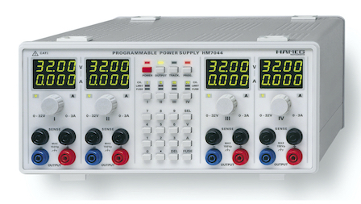

Project Hub
Central hub to the repositories of my projects.
Contents
(under construction)

Repair of a Hameg HM7044 Power Supply
I was lucky enough to get a Hameg HM7044 384W Power Supply practically for free. It got sorted out, because the current meter display is supposedly defect.
This page and repository serves as documentation for the steps in the repair process.
Error diagnostics and description
The Current meter does only show 0s on every channel in normal state.
Basic tests on all outputs suggested other functionality is still in order. For setting the current limit as well as when current limit is reached, values are correctly displayed in the current meter.
In another test remote functionality via RS-232 was confirmed succesfully.
Fault details:
- current meter shows 0.0 A during normal state
- current meter shows current limit value during setup and when in limiting state
- other functionality seems to be ok
First Conclusions (notes for self)
After having spent some time with the device, I think it’s time for a small summary of the information I could gather so far. Figure 1 shows the simplified internal device structure.

The grey arrows symbolize communication via 20-pin board-to-board connectors, the yellow line indicates the connection between supply circuitry on the supply board and the output connectors on the front board.
CPU board
- ASIC: HM7044-2 Ver.: 2.01
- Serial/Parallel converter ICs
- Shift registers
- TLP2630 opto-couplers for communication with supply board
- Level translator for RS-232 remote control input
CPU board <-> Supply board
The supply board pcb consists of 4 identical sections representing the 4 output channels, each of them connected to the CPU board with its own 20-pin connector. On the CPU board those signals are fed via four opto-couplers. Three of them connect signals from the CPU board to the supply board, while the other one has the opposed direction and connects 2 signals from the supply board to the CPU board, one of them being the ADC Output.
- 4 x 20 Pin connectors (1 for each channel)
- 4 opto-couplers (CPU->Supply: 3 , Supply->CPU: 1)
- MCP3202 ADC output signal from supply board to CPU
TLP2630 CPU Board -> Supply Board #1 (0V to 5V):
- DAC CS/LD Signal
- B2B connector Pin 2
TLP2630 CPU Board -> Supply Board #2 (0V to 5V):
- ADC CS/SHDN Signal
- Collector of Darlinton output stage for ADC D-Out
TLP2630 CPU Board -> Supply Board #3 (-5V to 0V)):
- Base of PNP controlling relay V- (switching Output on/off ?)
- Base of lower NPN
TLP2630 Supply Board -> CPU Board:
- buffered ADC D-Out Signal
- buffered DAC Vout-B
CPU board <-> Front board
- Serial/Parallel converters
- Signals directly coupled
- CPU board –> meter display data –> front board
- Front board –> button/knobs control signals –> CPU board
Backtracking the 7-Segment displays input signal
The displays input signals originate from the 7228 display driver, which ultimately gets his data from the CPU.
CPU (Pin 27) –> B2B-connector (Pin 17) –> Ser/Par conv. (HCT164) –> 7228 –> KW1-391AGA
Supply Board <-> CPU Board B2B-Connector Pinout
01: Supply Board GND
02: CLK for ADC & DAC
03: Supply Board GND
04: DAC CS
05: Supply Board GND
06: ADC CS
07: Supply Board GND
08: Supply Board GND
09: Supply Board GND
10: Supply Board ADC Darlington Output Stage Collector
11: Supply Board GND
12: Supply Board LM317 Vout (+5,16V)
13: Supply Board GND
14: Supply Board LM337 Vout (-5,26V)
15:
16: –> 1kOhm –> PNP Base && 10k && Via
17:
18:
19:
20: Supply Board ADC Darlington Output Stage Emitter
Notes
Display drivers 7228:
- Shutdown Pin (10) shorted to VDD -> all drivers always on
- ID0-ID3, ID7, MODE same signal for all 4 meter drivers (/ for all channels, voltage and current)
- ID5 & ID6 tied to GND, ID4 pulled to V+
- MODE pins shorted
- separate WRITE signals
Block Diagram
- separate Drivers for Current Meter (bottom row LED digits KW1-391AGA) and Voltage Meter (top row LED digits KW1-391AGA)
for current meter:
KW1-391AGA <-> 7228 <-> HCT164 <-> Connector Pin 17
-> There must be a switch for switching between saved limit value and momentary sense reading value!
- Must be on CPU board, since LED Digits input signal comes from B2B-connector
data input Serial/Parallel conv <-> Pin 17 front board to cpu board connector <-> Pin 2 4094 shift register & Pin 26 of main asic / CPU
-> CPU sends Vset/Iset serial signal to both shift register for optocoupler drive, as well as Serial/Parallel conv for driving meter displays
TLP2630 output pins to Pin 16/18 of B2B connector, pulled high via 10k resistors to VCC (of secondary/supply board side), Pin 8 of B2B Connector
Next:
- optocoupler going where exactly? (switch between limit and sensed current value?)
- optocoupler defect? input/control signal working? (4094?)
more readable:
Pin 26 of main asic/CPU connected to
- Pin 2 (data input B) of HCT164D Ser>Par shift register (CPU board, middle) AND
- Pin 17 front board connector ___
MCP3202 A/D Pin 3 Data In CH1 <— MC33172(#2) Pin 7 Output 2
MC33172(#2) Pins 5/6 (inputs 2) <— Divider/Filter <— MC33172(#1) Pin 1 Output 1
MC33172(#1) Pin 3 (input) <— Sense Connector
—> MC33172 (#2) Amplifier 2 (Pins 5,6,7): pre-amplification of Sense Connector Signals, Output connected to MCP3202 A/D CH1
MC33172 #1: getting Sense Connector Voltages, feeding MC33172 #2
MC33172 #2: feeding A/D converter
MC33172 #3: getting MC33172 #2 Output onto Pin 2 Input
Pictures
Front PCB


Supply PCB


ASIC/CPU PCB

Identified ICs
-
TIP142 Complementary power Darlington transistors (datasheet)
-
BYV32E Rectifier diodes ultrafast, rugged (datasheet)
-
LM317L 3-Terminal Adjustable Regulator SOIC (datasheet)
-
LM317T 3-Terminal Adjustable Regulator TO-220 (datasheet)
-
LM337LM 3-Terminal Adjustable Regulator (datasheet)
-
TL431 Automotive adjustable voltage reference (datasheet)
-
LM358M Low Power Dual Operational Amplifier (datasheet)
-
LTC1446 Dual 12-Bit Rail-to-Rail Micropower DAC (datasheet)
-
MCP3202 2.7V Dual Channel 12-Bit A/D Converter with SPI Serial Interface (datasheet)
-
MC33172 Low power dual bipolar operational amplifiers (datasheet)
-
KW1-391AGA Single Digit 7-segment LED Display (datasheet)
-
ICM7228 8-Digit, Microprocessor-Compatible, LED Display Decoder Driver (datasheet)
-
HCT4094 8-stage shift-and-store bus register (datasheet)
-
HCT164 8-bit serial-in, parallel-out shift register (datasheet)
-
HCT165 High-Speed CMOS Logic 8-Bit Parallel-In/Serial-Out Shift Register (datasheet)
-
TLP2630 Photocoupler (photo-IC output) (datasheet)
-
FP2 D3009 5V Signal Relais (datasheet)
-
BC846B (1BS marking on SOT23) datasheet)
-
BC859C (4GW marking on SOT23) (datasheet)
-
HIN202 +5V Powered RS-232 Transmitters/Receivers (datasheet)